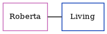

Vera L Standing (née Hancock)
[ Home ] | [ Calendar ] | [ Surnames Index ] | [ Census Index ] | [ Family History ]Vera Hancock, the wife of Ernest Henry Standing (the fourth cousin once-removed on the father's side of Nigel Horne), and married Ernest in Greenwich, London, England around May 19331.
Citations
- England & Wales Marriages 1837-2005 - Findmypast
Media
England & Wales marriages 1837-2005 - BMD/M/1933/2/AZ/000527/135
Family Tree
Generated by ged2site. Last updated on Jun 11, 2024